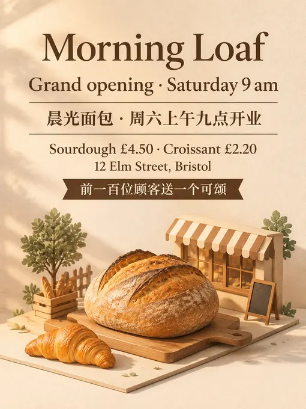
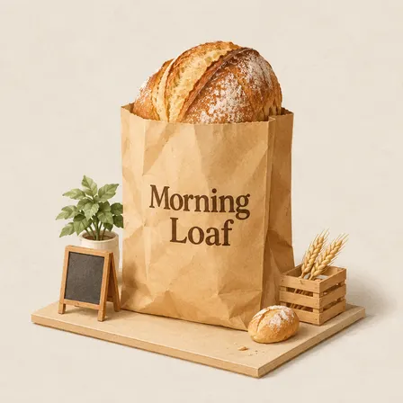
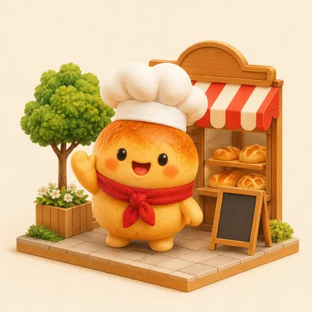
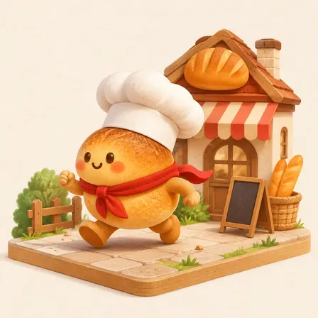
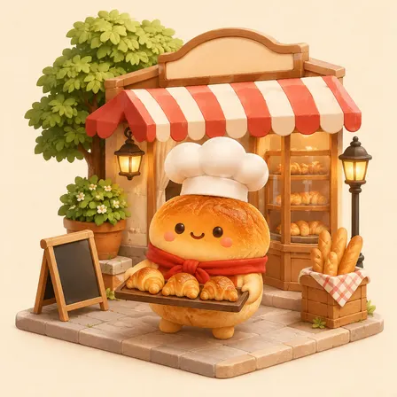
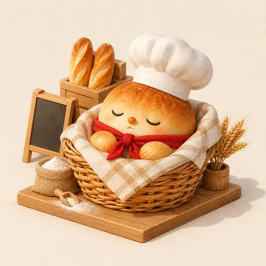

nevertoday/xxd-panel-028: image test, 2026-11-08
The same brief for every skill: a 3:4 poster for a made-up bakery with six exact lines of English and Chinese text, a square photo of a kraft-paper bag printed with the shop's name, and four square pictures of one mascot in four poses. Claude Code (Claude Opus 5.5) made them with the skill in a throwaway sandbox; every image call went to the newest model of the family the skill asked for (GPT Image 2.6, Nano Banana 2.1 or FLUX 3). 4.6 minutes; 12 image calls ($0.102), drawn by gpt-image-2.6-ext. All results · The brief · How it is scored
Built to turn photos into isometric paper miniatures; from the brief alone it staged the mascot in a tiny bakery stall.
Result
Followed the brief · a look of its own
The pictures












The text, read letter by letter
Read by OCR (macOS Vision, five passes); a line OCR could not find as written was looked at by hand.
| Asked for | Written |
|---|---|
| Morning Loaf | right |
| Grand opening · Saturday 9 am | right |
| 晨光面包 · 周六上午九点开业 | right |
| Sourdough £4.50 · Croissant £2.20 | right |
| 12 Elm Street, Bristol | right |
| 前一百位顾客送一个可颂 | right |
| Morning Loaf (on the bag) | right |
The mascots (judged by a vision model)
| Same character in all four (1-5) | 5 |
|---|---|
| Poses as asked (of 4) | 4 |
| Chef's hat and red scarf in all four | yes |
| Text on them | no |
The judge's note: All four clearly show the same round bun mascot with matching colors, face, chef hat, and red scarf in the requested poses.
How it went (the session's closing message)
All six pictures are in `~/work/output/` with the names from the brief, in the skill's isometric paper-diorama style. I looked at each one at full size before delivering it. - **`poster.png`** (1536×2048, 3:4): a sourdough loaf in warm light on a small paper-model bakery base. It has exactly the six lines, spelled correctly, including the `·` separators and the £ signs. It came back from the model at 768×1024 and was enlarged to 1536×2048, so it is softer than its size suggests. - **`product.png`** (1024×1024): a kraft bag with a sourdough loaf on top and "Morning Loaf" in dark brown. The background is the skill's off-white paper rather than the light grey in the brief. - **`mascot-1.png` to `mascot-4.png`** (1024×1024): Bun waving from the front, running left, carrying three croissants, and asleep in a wicker basket. Hat, scarf, crust colour and body shape match across all four. One flaw: in `mascot-4` Bun has a small orange nose that the other three don't have. How it went: - **First attempt failed:** the model split every picture into a photo on top and a diorama below, which the skill rejects for this kind of output. Its rules allow one retry per picture, so I retried all six, adding only the missed rule (one full picture, no photo half, blank signs). All six retries passed. - **No photos:** the skill is built to turn a photo into a diorama, and the brief has none. Its rules allow making pictures from text alone in that case, so I did. - **Image service:** the skill's image script looks for a Codex setup, which this machine doesn't have. I gave the script a local route to the OpenAI image API (no global settings changed), using the skill's own prompts and settings. - **Mascot matching relies on the prompt alone:** the skill doesn't allow feeding one finished picture into the next, so the four mascots look alike because each prompt describes Bun the same way. - **Metadata:** the skill's metadata-cleanup tool isn't installed, so I saved clean copies myself without changing any pixels. Parts of the brief the skill could not meet: the skill's paper-diorama look replaces the brief's plain light-grey studio background for the bag, and its "one picture at a time" rule only allows matching the four mascots through the prompt wording. DELIVERABLE: ~/work/output/